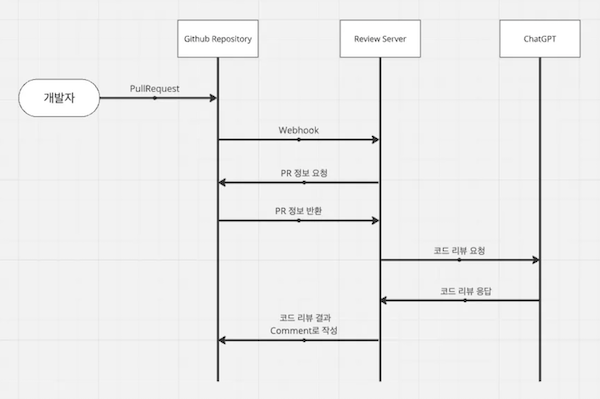

프로젝트: StockHolmes
목표: WMS 구현
팀 구성: 프론트엔드 2명, 백엔드 4명
역할: 팀장 및 프론트엔드 담당
문제 상황
팀 내 코드 리뷰 문화가 활성화되지 않아 팀원 간 갈등이 발생했습니다. 초기에는 정기적인 코드 리뷰를 약속하고 프로젝트를 시작했지만, 리뷰 시 실질적인 논의가 거의 없었고, 팀원 간 피드백에 대한 기대도 낮은 상태였습니다.
팀원들과 개별 대화를 나눈 결과, “내가 틀릴까 봐 말을 아끼게 된다.”, “리뷰해도 별 도움이 안 되는 것 같다.” 와 같은 반응이 있었습니다.
해결 과정
이 문제를 단순한 커뮤니케이션 개선이 아닌 시스템적 접근으로 해결하고자 했습니다.
코드 리뷰는 사람의 지식에 의존하기 때문에 한계가 있습니다. 이에 저는 자동화된 코드 리뷰 주제 제안 서버를 기획하고 직접 구현했습니다.
먼저 시퀀스 다이어그램을 통해 코드 리뷰 주제 제안 서버의 기능을 기획했습니다.

간단한 서버를 구현하기 위해 Javascript와 Express.js를 활용하여 개발을 진행했고, open AI API를 활용해서 코드 리뷰 주제를 생성하도록 구현했습니다. 이후 AWS EC2를 활용해 서버를 배포했고, Github Webhook과 연동했습니다.
결과
코드 리뷰 주제 제안 서버의 도입은 팀 내 코드 리뷰 문화에 실질적인 변화를 가져왔습니다. 팀원들이 제안받은 주제로 각자 의견을 내기 시작했고, 이를 통해 여러가지 개선점을 알아낼 수 있었습니다.
먼저 프론트엔드에서는 복잡했던 Table 컴포넌트를 리팩토링 할 수 있었습니다. Table을 그리기 위한 기본 로직을 다루는 useTable 훅, 각 데이터의 특성에 맞게 가공하는 useDataTable 훅 그리고 실제 Table의 UI를 가지고 있는 Table 컴포넌트로 분리했고, 이를 통해 중복 코드 제거 및 유지보수 용이성 향상 등의 개선을 이뤄냈습니다.
백엔드에서는 MyBatis를 활용해 데이터를 INSERT하는 과정에서 대량의 INSERT문을 batch insert로 수정하여 성능을 개선했습니다.
회고
이번 경험을 통해 기술적 해결책을 통해 팀 문화를 바꿀 수 있음을 느꼈습니다. 단순히 기능 구현을 넘어서, 시스템적으로 팀의 생산성과 협업 문화를 개선하는 방법에 대해 고민하고 적용할 수 있었던 의미 있는 경험이었습니다.